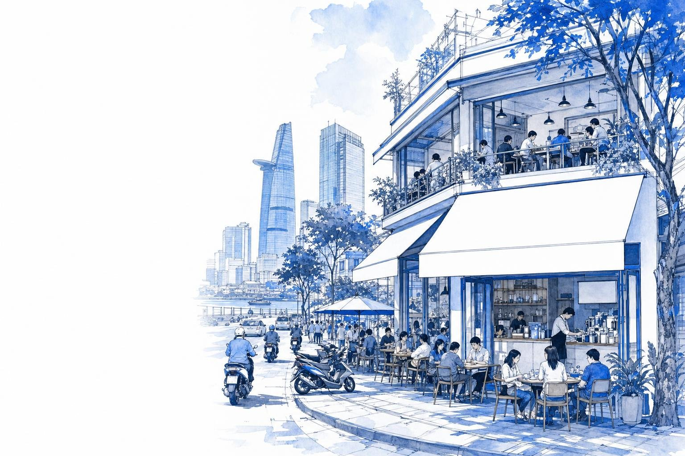

Market entry brief
VietnamCoffee chainsHow to win
How a Korean or Japanese coffee chain can win where local brands set the price and foreign chains have stalled
2026
Know first.
Move first.
Move first.

How a Korean or Japanese coffee chain can win where local brands set the price and foreign chains have stalled
This view is built from two evidence streams: analyst research — local-language desk research, company and channel disclosures, and analyst synthesis — and secondary anchors — statistical authorities, listed company filings, and triangulated estimates. Every quantitative claim carries an explicit source tag.
The contradiction: coffee chains grew 27% in 2025 while about 50,000 F&B outlets closed in six months. Growth is real, but it goes to operators whose stores clear the numbers.
Each argument is tested against published data; the rating shows whether it supports a mid-premium, food-led entry.
| Argument | Evidence | So what for the entrant | Support for entry |
|---|---|---|---|
| The pool is large and growing | Coffee chains USD 725m, tea chains USD 617m in 2025, both up 27-28% [MW 2026]; chain outlets 2.5x since 2019 [b-company 2025] | Room for a new brand without a price war, if it avoids the budget tier | |
| Locals own the low-price box | Highlands 985 stores after 134 openings in 2025 [JFC 2025]; Milano about 2,500 outlets [MW 2026]; Mixue drinks at VND 10-30k [Mixue 2025] | Rules out a budget-coffee format: it would meet the strongest incumbents at their cost advantage | |
| The occasion gap is measurable | Drink-only 77% of visits; food lifts the ticket to VND 162k; Phuc Long, the best at food, attaches it on 28% of orders [Q&Me 2026] | Lead with bakery and dessert; price drinks in line with Katinat and Phuc Long | |
| Store economics are tight but workable | Break-even near VND 16m a day; Phuc Long averaged VND 22.8m in 2025 [Masan 2025] [Kira estimates] | Only top-quartile sites work: site access decides the case | |
| Rules allow 100% ownership | Café services open to full foreign ownership [WTO Schedule 2007]; sugar excise 8% from 2027 [SCT Law 2025] | No licence partner is needed; a partner is chosen for sites, not permission |
We assume growth cools from 27% as the shakeout ends and store openings slow; the base case still adds USD 0.7bn of chain sales in five years.
The count covers the leading branded chains; it excludes most of the 300,000-plus independent cafés and the largest takeaway kiosk networks.
Rising rents, input costs and tax formalisation pushed out small independents; branded chains with scale bought sites and took their customers.
We keep only indicators with a direct link to chain café spending; generic macro series are left out.
| Indicator | Latest | Trend | Link to café spend |
|---|---|---|---|
| Income per person | VND 6.0m / month, 2025 [GSO 2025] | +10.9% y/y; urban VND 7.4m | Chain visits at VND 50-80k are an affordable treat for urban earners |
| GDP per person | USD 5,026, 2025 [GSO 2025] | from USD 3,552 in 2020 | Upper-middle income: the premium-casual tier keeps widening |
| Domestic coffee use | 4.9m bags, 2025/26 [USDA 2025] | rising with urban cafés | Coffee is a daily habit; the contest is on format, not adoption |
| Food-delivery spend | USD 2.1bn, 2025 [MW Delivery 2026] | +19% y/y | Delivery is a second front for chains; it brings volume and fees |
| Robusta farm-gate price | ~VND 88,000/kg, May 2026 [DN Hoi nhap 2026] | about 28% below May 2025 | Bean costs ease from the 2025 peak above VND 132,000/kg |
| Minimum wage, region I | VND 5.31m / month [Decree 293/2025] | from 1 Jan 2026 | Labour stays cheap by regional standards; turnover is the cost |
Every demand signal points up. Incomes rose 10.9% in 2025 [GSO 2025], and delivery spend rose 19% [MW Delivery 2026].
Costs moved the other way in 2026. Robusta prices fell about 28% from a year earlier [DN Hoi nhap 2026], easing the 2025 squeeze on cup margins.
Counts come from different dates in 2025-26 and are rounded; they show order of magnitude, not market share.
Starbucks holds about 3% of these outlets after 13 years in the market [Kira estimates]; it reached 150 stores only in January 2026 [Tuoi Tre 2026].
Scale sits in two models: franchised low-price kiosks (Milano, E-Coffee) and company-run cafés (Highlands opened 134 stores in 2025 alone [JFC 2025]).
Spend per guest from collected receipts shows where each chain really sits, beyond list prices.
Highlands anchors the everyday visit at VND 47k a guest and VND 76k a receipt, the lowest of the five chains measured [Q&Me 2026].
Below it sits a kiosk tier at VND 10-30k an item [Mixue 2025]. A budget format would be squeezed between the two, with no scale advantage over either.
Picture a Dong Khoi flagship with a queue round the block in 2014; a few years later the brand's outlets had moved to food courts. The same arc has repeated since.
Queues at launch did not last. Caffe Bene cut its 300-store goal to 100 within a year [Vietstock 2019]; Tous les Jours had 37 stores in 2023 [WCP 2024] against 100 planned for 2020 [Inside Retail 2017].
Even strong locals retreat when a format fails: Phuc Long shut its supermarket kiosks in late 2023 at a VND 42bn cost [Znews 2024].
From late 2026, the number-one chain gains a local controlling owner and a listing plan, and the leading foreign chain gains a new parent.
| Deal | Status | What changes for an entrant |
|---|---|---|
| Highlands: founder's company buys 11% from Jollibee for VND 2.3tn | Agreed 23 Sep 2026; not yet completed | Local control plus listing cash: faster openings and harder bidding for prime sites |
| Starbucks: DFI to own the licensed business in 7 markets incl. Vietnam | Signed 30 Sep 2026; completion targeted by 31 Mar 2027 | A retail-group owner targeting SGD 14m a year of procurement and real-estate savings |
| The Coffee House: Golden Gate buys 99.98% from Seedcom | Completed Jan 2025 | A restaurant group reshaping a 93-site network; a possible source of sites |
Food adds about VND 74k to a drink order, and promotions touch only 18% of receipts: the upside is in what people do not yet buy, not in discounts.
Solo visitors come to work and choose on comfort; friends, couples and families come to meet and buy more items.
Axes are what customers actually buy (tea vs coffee) and what they actually spend per person, not perception scores.
The two premium chains are coffee-led; the two tea-led chains sell at VND 54-58k a guest [Q&Me 2026].
No measured chain sells a tea-led visit above VND 60k. Food is the way up: Phuc Long, the chain with the most food orders, still attaches food to only 28% of orders.
The funnel narrows from all chain sales to the city and price tier a mid-premium entrant can serve, then to what 20 good stores can sell.
The serviceable pool is about USD 160m: coffee-chain sales in the two big cities at mid-premium prices [Kira estimates].
Twenty stores at VND 25m a day make about VND 183bn, or USD 7m a year [Kira estimates], about 4% of that tier.
The concept follows the evidence: match the local price for the drink, differentiate on what customers do not yet get.
This is our reference P&L for the entrant concept, built from published cost inputs; it is a threshold to test, not a forecast.
A 120 m² café at VND 25m a day sells VND 750m a month; staff cost assumes 14 people at VND 8m fully loaded, about 1.5x the region-I minimum wage [Decree 293/2025] [Kira estimates].
Rent is budgeted at VND 120m a month, about twice the average District 1 street-front asking rent of VND 62m [VOH 2025], for a corner or two-frontage site; prime Dong Khoi ground floors at USD 80-150 per m² [b-company 2026] do not fit this model.
The reference store breaks even at about VND 15.8m a day. Paying back its fit-out within three years needs VND 22.5m, the level Phuc Long's network averaged in 2025.
Daily sales break into tickets and average ticket; the order mix inside the ticket is where an entrant can outperform.
Ten more points of food attachment add VND 1.7m a day, as much as 18 extra tickets, with no new seat, rent or staff [Kira estimates].
Traffic is the expensive lever: extra tickets need marketing, delivery spend or a better site; a pastry case needs an oven and a recipe.
Each bar varies one assumption and holds the others at the reference case; the widest bar is the risk to manage.
Daily sales swing payback by 41 months, from 17 to 58; no cost line moves it by more than 11 months [Kira estimates].
So the decision is about sites and concept, not about shaving fit-out or ingredient costs.
Rules for café chains are light compared with goods retail; the regulatory work is mostly licences per outlet and new cost lines.
| Rule | What it says | Implication for the entrant | Type |
|---|---|---|---|
| Foreign ownership | Café and restaurant services are open to 100% foreign ownership [WTO Schedule 2007] | No licence partner needed; a wholly owned or majority JV entity is possible | |
| Outlet licences | Each outlet needs a food-safety eligibility certificate before trading | Build licence lead time into every opening plan | |
| Franchising | A foreign franchisor registers with the trade ministry before granting franchises | Needed only for a master-franchise or sub-franchise route | |
| Goods trading | Decree 342/2026 replaces Decree 09/2018 from 18 Oct 2026 and narrows the economic-needs test [Decree 342/2026] | Matters only if the chain also retails packaged goods; confirm with counsel | |
| Sugar excise | 8% from 1 Jan 2027, 10% from 2028, on drinks above 5 g sugar per 100 ml [SCT Law 2025] | Bottled lines are in scope; scope for fresh-made drinks is unclear | |
| Labour cost | Region-I minimum wage VND 5.31m a month from 1 Jan 2026 [Decree 293/2025] | Low base, but turnover and training are the real cost | |
| Delivery platforms | Commissions average 20-25%, 25-30% for newcomers [Vietnam News 2025] | Negotiate terms before launch; cap delivery at 35% of sales |
We score partner types on two tests from the outside: can they deliver good sites, and are they free of a competing café brand.
Restaurant groups have sites but often own a café brand: Golden Gate has owned The Coffee House since January 2025 [VIR 2025].
Shop-in-shop hosts bring footfall, not occasions: Phuc Long's supermarket kiosks closed at a VND 42bn cost [Znews 2024].
Likelihoods are our judgement from each rival's disclosed strategy and recent moves; they are not forecasts.
| Rival | Open in the same trade area | Copy hit menu items | Price promotions | Lock prime leases | Delivery-app promotions | Avg |
|---|---|---|---|---|---|---|
| Highlands | 5 | 3 | 3 | 5 | 4 | 4.0 |
| Katinat | 4 | 5 | 2 | 3 | 4 | 3.6 |
| Phuc Long | 3 | 3 | 3 | 3 | 4 | 3.2 |
| Starbucks (DFI from 2027) | 2 | 2 | 3 | 3 | 3 | 2.6 |
| Low-price networks | 3 | 2 | 4 | 1 | 3 | 2.6 |
Highlands answers with stores: it opened 134 in 2025 [JFC 2025] and plans a listing; expect it next door to any good site.
Katinat answers with product: it competes on menu agility, so a signature drink will be matched within a season. Phuc Long is optimising per store, growing revenue 16.7% in 2025 [Masan 2025].
Each condition comes from the store model and the evidence in sections 05-08; confidence reflects how much is already observed in the market.
| Condition to win | Why it matters | How sure we are | How to test it |
|---|---|---|---|
| Pilot stores hold VND 22m+ a day for six months after opening | Sets a three-year payback; the leaders' 2025 averages bracket it at about 17 and 22.8 | Three pilot stores; weekly POS read-out from month 1 | |
| Food attached to 30%+ of orders | Lifts the ticket to about VND 94.5k; chain average is 23% | Pastry-case and combo tests in the pilot | |
| Rent at or below 16% of sales on 5-year leases | Rent is the largest fixed cost and the main reason outlets fail | Partner's site list priced against plan sales before signing | |
| Delivery at or below 35% of sales, at 22% or less effective fee | Above that, app fees erase the margin gain from food | Terms with both leading apps agreed before launch | |
| A partner with 15+ suitable sites and no café brand | Site access is the binding constraint; conflicts kill priority | Long-list of 15; receptivity calls in the first 90 days | |
| A menu that stays two drops ahead of copycats | Katinat-style fast followers will match signature drinks | Six-to-eight-week drop calendar; track copy lag |
Fading sales ended earlier foreign entrants' plans (section 05); the next two risks come from rivals' capital. Scores are judgement until pilot data replaces them at gate 1.
| Risk | Likelihood | Impact | Score | Mitigation |
|---|---|---|---|---|
| Sales fade after the opening buzz | 4 | 5 | 20 | Gate on month-4 to month-9 sales, not launch weeks |
| IPO-funded Highlands crowds trade areas | 4 | 4 | 16 | Lock first sites before the 2027 listing |
| Signature menu copied within a season | 5 | 3 | 15 | Lead with food; drop calendar every 6-8 weeks |
| Partner misaligned on sites or pace | 3 | 4 | 12 | Site pipeline and exit terms written into the JV |
| Rent repriced at renewal | 3 | 4 | 12 | 5-year leases with capped renewals |
| Delivery fees rise above 25% | 4 | 3 | 12 | Own ordering app; cap delivery at 35% of sales |
| Bean prices spike again | 3 | 3 | 9 | Blend and hedge through a local roaster |
| Sugar excise extended to fresh drinks | 2 | 2 | 4 | Low-sugar recipes ready by 2027 |
Five entry routes rated against what decides a café-chain case in Vietnam. Ratings are KIRA judgement from the evidence in sections 05-08.
| Entry route | Speed to 20 stores | Capital at risk | Brand and menu control | Access to sites | Learning for the brand owner |
|---|---|---|---|---|---|
| Wholly owned subsidiary | sites from zero | USD 3-4m for 20 stores | |||
| Master franchise to a local operator | fee income | operator's own | |||
| JV with a site-owning partner, 51%+ | 3 stores in 9 months | shared | IP and recipes retained | partner pipeline | |
| Shop-in-shop in a retail chain | host's stores | kiosk exits in 2023 | |||
| Acquire a mid-size local chain | rebrand risk | distressed targets exist |
The JV is the only route fair or better on every criterion. It trades some speed for control of the brand and the recipes, and borrows the partner's site pipeline.
Capital for 20 stores is about VND 85bn, or USD 3.3m, at VND 4.25bn per store [Kira estimates]; a JV halves the entrant's share.
What would change it: a distressed mid-size chain priced near its fit-out value would make acquisition faster. The Coffee House sold at a fifth of its 2021 valuation [VIR 2025].
Each gate releases the next budget only when its test is met. Budgets are KIRA estimates for a JV in which the entrant funds its share. [Kira estimates]
| Gate | What happens | Budget | Duration | Go / no-go test |
|---|---|---|---|---|
| G0 · Partner and sites | Partner diligence, JV terms, menu localisation, three sites priced against plan sales | USD 0.3-0.5m | Months 0-6 | Signed JV; three sites at rent of 16% of plan sales or less |
| G1 · Pilot, 3 stores | Fit-out VND 4.25bn per store, pre-opening, small country team | USD 0.8-1.2m | Months 6-18 | VND 22m+ a day held months 4-9; food attach 30%+; delivery 35% or less |
| G2 · Cluster, 15-20 stores | HCMC first, then Hanoi; central bakery once 10+ stores | USD 3-4.5m | Months 18-36 | Store EBITDA 18%+; payback tracking 36 months or less; HQ cost 8% of sales or less |
| G3 · Scale, 50+ | Sub-franchise into provinces through the partner | Franchisee-funded | Months 36-60 | New stores reach 85%+ of cohort sales; same-store sales 0% or better |
A start in early 2027 puts the first stores in the market before Highlands' listing proceeds reach the property market.
This view triangulates two evidence streams. Where a figure carries a named source tag, the data comes from that source; full citations follow. Where a figure carries [Kira estimates], our analysts derived it from disclosed inputs, chiefly the reference-store model (120 m², VND 25m a day, VND 4.25bn fit-out, USD 1 = VND 26,000). About 23% of tagged figures are KIRA-derived. Desk research only: no interviews or store checks were run.
Continued alphabetical index of every named source cited in this report. Survey-based figures (receipt analysis) reflect small samples and are read as patterns, not precise shares.
We hope this report gives your team a clear view of the market and the decisions ahead. For further discussion, custom research or partnership opportunities, please get in touch with our research team.
Where the stores went
Outlets grew from 816 to 2,067 between 2019 and 2025 [b-company 2025]. Ho Chi Minh City still holds 43% of them, Hanoi 21% [Kira estimates].
The provinces grew fastest, 4.5x. Chains followed income growth into second-tier cities; urban incomes averaged VND 7.4m a month in 2025 against VND 5.2m in rural areas [GSO 2025].